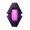
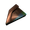
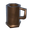
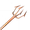
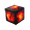

腐疫矿区
本站支持中英文站内搜索。带 ↗ 的链接指向外部网站；各页来源版本见页脚。

Mistlands_DvergrTownEntrance1
说明
腐疫矿区位于黑大理石建筑下或大型岩石结构内，通常由多只邪蛛探索者守卫。
地下城由形状大小各异的相连房间组成，通常从主矩形走廊分支。
部分房间或通道可能藏在两类隐藏门后：
- 老式矮人大门：除矮人脸纹外，几乎无法与实心大理石墙区分。
- 隐秘之门：刻蓝色符文的小大理石块。两类均互动即可开启。旧矮人门通常通向普通通道或房间，隐藏门则通向宝藏室。
其他房间被木路障封住，玩家必须破坏才能前进。
资源
虫巢矿洞中的主要资源包括：

黑暗之核分布矿区各处，尤其蓝色符文隐藏门后的宝藏室。
封印破除者碎片分布矿区各处，封在透明晶体中，需破坏晶体。 皇家果冻主要以地面堆状出现，可互动或破坏，邪蛛幼体也会掉落。皇家果冻堆每4小时重生。
皇家果冻主要以地面堆状出现，可互动或破坏，邪蛛幼体也会掉落。皇家果冻堆每4小时重生。

宝藏室内有虫巢矿洞藏宝箱，含钱币、少量蜜酒、香肠、一个矮人酒杯和一个钩子。 宝藏室堆中的钱币，平均每堆138.5金币。
宝藏室堆中的钱币，平均每堆138.5金币。
破坏矮人灯笼获取焰灵之核。 破坏矮人灯笼获取铜碎屑。
破坏矮人灯笼获取铜碎屑。 破坏路障获取木材。
破坏路障获取木材。 破坏栏杆获取黑大理石。
破坏栏杆获取黑大理石。
所有或几乎所有矿区都有邪蛛探索者、邪蛛幼雏和壁虱幼虫，较大房间也可能生成邪蛛士兵。除幼体外，敌人都可能有带星级变体。部分每4小时重生。
战略
结构类似冰霜洞穴，探索应谨慎前进，检查各方向开口或可破木墙，并留意高低差。整段区域清理前，最好不要打破墙。始终保留通向出口的畅通路线，以便逃离危险。
尤其刚进房间时，容易被多名敌人围攻。矿区敌人没有元素攻击，探索者还会从远处迅速飞扑造成巨大伤害，因此邪骨恶灵放逐之力最有帮助。仍应至少吃一种优质生命值食物，承受不止一次强力命中；源质流派尤其如此，因为埃达织物套装防御很低。
加尔无法在矿区攻击玩家，且多数伤害是穿刺，因此探索腐疫矿区时，树根胸甲远优于其他胸甲。
软泥炸弹可安全杀死墙后敌人，大锤和战斧也可穿墙命中，提供其他较安全击杀方法。
说明
- 内部可放置营火和烹饪台。
- 每处矿区黑暗之核数量差异很大，部分完全没有，因此常需探索多处才能建首座源质精炼器。
- 旧矮人门和隐藏门开启后无法关闭。
- 宝藏室是隐藏门后的小房间，黑暗之核放在支架上，类似墓穴焰灵之核。房内有大量金币、无敌人，并有装蜜酒、金币和香肠的宝箱。
图片库
-
A 隐秘之门 通往宝藏室
-
一个 老式矮人大门
-
一个特写 隐秘之门
- 支架上的黑暗之核及玻璃盒中的封印破除者碎片，打破玻璃即可获取。
-
虫巢矿洞入口概念画
- 废弃矿道尽头的蛊虫之后导向符文石。
- 类似概念图的常见腐疫矿区变体。


| 生物群系 | |||||||||||||||||||
|---|---|---|---|---|---|---|---|---|---|---|---|---|---|---|---|---|---|---|---|
| 重要 地点 |
| ||||||||||||||||||
| 资源 采集点 |
| ||||||||||||||||||
Mistlands_DvergrTownEntrance1
Infested mines are dungeons found in the Mistlands.
Description
Infested mines are found beneath Black Marble buildings or within large stone formations, and are typically guarded by multiple Seekers.
These dungeons are composed of multiple rooms of different shapes and sizes linked together, usually branching off of one main rectangular hallway chamber.
Sometimes, rooms or passageways will be hidden behind one of two types of hidden doors:
- The Old dvergr gate, which looks almost indistinguishable from the solid marble walls of the mines except for a Dvergr face pattern.
- The Hidden door, which is a small marble block with blue runes inscribed on it. Both types of doors can be opened simply by interacting with them. Old Dvergr gates usually lead to regular passages or rooms, whereas Hidden doors lead to treasure rooms.
Other rooms are closed off with wooden barricades that the player must destroy to proceed.
Resources
The main resources found in Infested mines are:
- Black Cores are found all around the mine, in particular in treasure rooms behind hidden doors with blue runes.
- Sealbreaker Fragments are found all around the mine, trapped in transparent crystals that need to be destroyed.
- Royal Jelly is found mainly in piles on the floor, which can be interacted with or destroyed, but are also dropped by Seeker broods. Royal jelly piles respawn every 4 hours.
- Infested Mine Treasure Chest can be found inside treasure rooms, they contain Coins, minor Meads, Sausages, a Dvergr Tankard and a Hook.
- Coins from piles in treasure rooms at an average 138.5 coins per pile.
- Surtling Core from destroyed Dvergr Lantern.
- Copper Scrap from destroyed Dvergr lantern.
- Wood from destroyed barricades.
- Black Marble from destroyed railings.
Seekers, Seeker Broods and Ticks are found in all or at least nearly all of these mines. Seeker Soldiers also have a chance to spawn in larger rooms. All of these enemies except Seeker Broods can have starred variants. Some enemies will respawn every 4 hours.
Strategy
The dungeon's structure is similar to that of Frost Caves, therefore proceeding carefully, searching for possible openings or breakable wooden walls in all directions, and being wary of heights are the main considerations necessary when exploring. It is a good idea to avoid breaking walls before an entire section is cleared. A clear path to the exit should be kept to allow fleeing from danger.
It is easy to be swarmed by multiple enemies at once, especially when first entering a room. As such, since the enemies in the mines lack elemental attacks, and due to the Seekers' dive-bomb attacks (which allows them to spring at players quickly from afar and deal massive damage), having the Bonemass Forsaken power is most beneficial here. Players should still consider eating at least one good Health-boosting food so that they can tank more than one strong hit at once, especially if they plan on running an Eitr-focused build as the Eitr-weave Set provides very little defense.
Since Gjall cannot attack the player in the mines, and most of the damage is pierce, the Root Harnesk is a much better choice than any other breastplate for exploring infested mines.
Ooze bombs can be used to safely kill enemies behind walls. Alternatively, sledge hammers and battleaxes can hit through walls, providing yet another way to dispatch enemies in relative safety.
Notes
- You can place Campfires and Cooking Stations inside.
- The number of black cores per infested mine can vary significantly. As some mines may lack black cores entirely, it is often necessary to explore multiple mines before players can build their first eitr refinery.
- Old Dvergr gates and Hidden doors cannot be closed once opened.
- Treasure rooms are small rooms behind hidden doors containing black cores on sticks similar to surtling cores in burial chambers. A lot of gold and no enemies spawn in these rooms, as well as chests with mead and gold, as well as sausages.
Gallery
-
A Hidden door leading to a treasure room
-
An Old dvergr gate
-
A closeup of a Hidden door
-
A Black Core in its stand and a Sealbreaker Fragment encased in a glass box, which can be shattered to claim the fragment
-
Concept Art Infested Mines Entrance
-
The Queen Vegvisir at the end of an abandoned mine tunnel
-
A common variant of the Infested Mines reminiscent of the concept art.
| Biomes | Meadows • Black Forest • Ocean • Swamp • Mountain • Plains • Mistlands • Ashlands • Deep North • World Edge | ||||||||||||||||||
|---|---|---|---|---|---|---|---|---|---|---|---|---|---|---|---|---|---|---|---|
| Points of interest |
| ||||||||||||||||||
| Resource nodes |
| ||||||||||||||||||